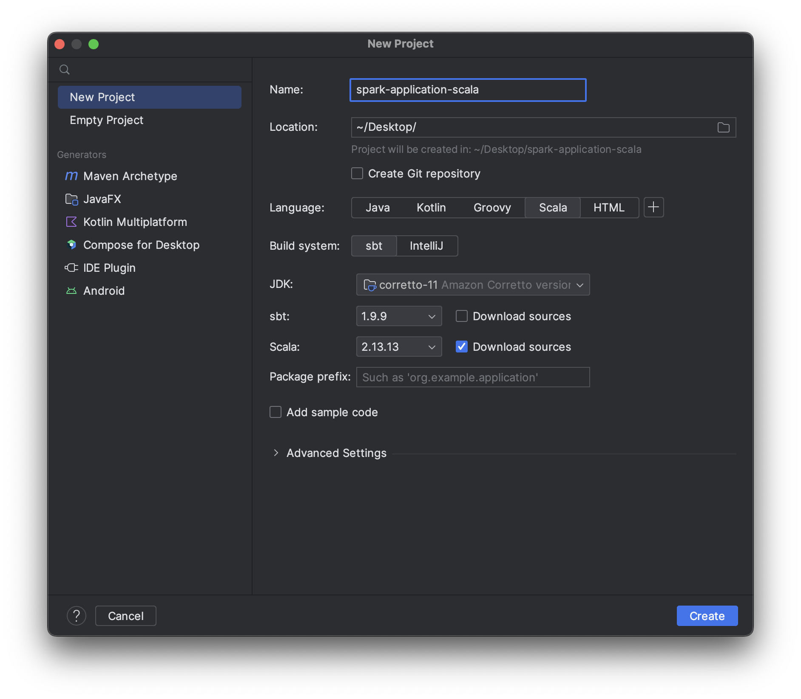
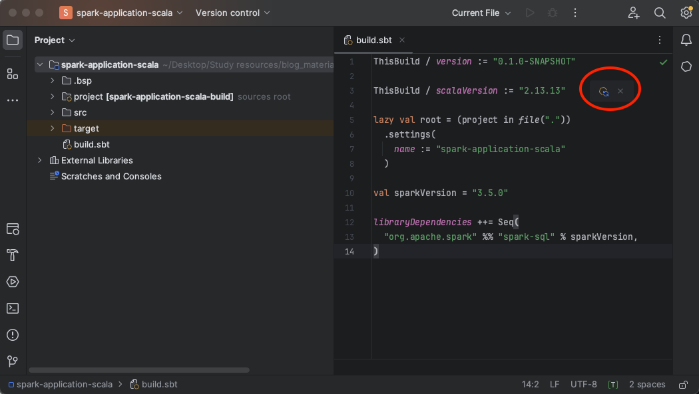

In this article we’ll see how to set your local machine to run efficiently Spark Application with Scala API in IntelliJ IDE.
This guide has been tested on macOS 14.3 and on Windows 11.
You can find the code used in this mini-guide (and in the next ones) in the following associated repository: https://github.com/simdangelo/apache-spark-blog-tutorial.
1. Install IntelliJ IDEA Community Edition
Download IntelliJ IDEA Community Edition from the official JetBrains site (be careful not to install IntelliJ IDEA Ultimate which is a paid version): https://www.jetbrains.com/idea/download/.
After the installation open it and, before starting any project, go in the Plugins tab and install Scala.
2. Create a New Project
After installing Scala plugin, go in the Projects tab and select New Project to open the new project window:

In this panel:
-
change the Name and Location with your preferences;
-
select Scala as Language and sbt as Build system. As Scala version I suggest you to choose the version 2.13 or 2.12. Don’t choose higher version because Spark is not compatible with Scala 3.0.
-
as JDK you can have multiple choice, but the one that I am currently using and it works on my machine is corretto-11. If you have never downloaded Java on your machine, you probably don’t have any choices in the dropdown menu, so you can download some version directly from this menu simply by clicking on Add SDK in the dropdown menu and then select Download JDK:

Then choose Amazon Corretto as Vendor and select the Version 11. Then click on Download:

-
Then click on Create on the previous project creation window.
What you should see after a while is the a window with your new project like:

3. Install library dependencies
To run Apache Spark Application in this configuration, we must set some dependencies on the build.sbt file. So, open the file and add these lines of code:
val sparkVersion = "3.5.0"
libraryDependencies ++= Seq(
"org.apache.spark" %% "spark-sql" % sparkVersion,
)
You should see something like:

You must now click on the symbol within the red circle to load the changes into the IntelliJ project and ensure that the dependencies work correctly. This operation could require some seconds to finish.
4. Run your first Spark Application
Let’s check if all these configurations work correctly by running our first Spark Application. Navigate to the Project tool window located on the left-hand side of the IDE and navigate to src/main/scala folder. Then right-click on the scala folder and from the context menu click on New and then Scala Class. Then click on Object and give a name to your first application:

Then double click on Object.
After creating the new file, it will open up for you to start writing your Spark Application. Simply type main, and IntelliJ will suggest pressing “Enter” on your keyboard to add the main function automatically:

Now, we’re all set to begin writing our first Spark Application. It will be quite simple, just to ensure that all configurations are correctly set.
Let’s start by creating an entry-point for Spark Applications with SparkSession:
val spark = SparkSession.builder()
.config("spark.master", "local")
.appName("First Spark Application")
.getOrCreate()
Now we’ll create a basic DataFrame and show the contents in the console:
def printDF(): Unit = {
val users_data = Seq(
("Paolo", "Rossi", 54, "Italia"),
("John", "Doe", 24, "USA"),
)
val usersDF = spark.createDataFrame(users_data)
usersDF.show()
}
Now, run the application by clicking on the Run symbol in the top bar of IntelliJ making sure that Current File is selected. You’ll be able to view the result in the console as shown in the following image. Please note that you’ll need to find the result among the logs printed there. Initially, it might appear that the application has encountered an error due to the volume of INFO logs printed, but it’s all right.
The final result you should see in the console is:

5. Full code
import org.apache.spark.sql.SparkSession
object firstApplication {
val spark = SparkSession.builder()
.config("spark.master", "local")
.appName("First Spark Application")
.getOrCreate()
def printDF(): Unit = {
val users_data = Seq(
("Paolo", "Rossi", 54, "Italia"),
("John", "Doe", 24, "USA"),
)
val usersDF = spark.createDataFrame(users_data)
usersDF.show()
}
def main(args: Array[String]): Unit = {
printDF()
}
}